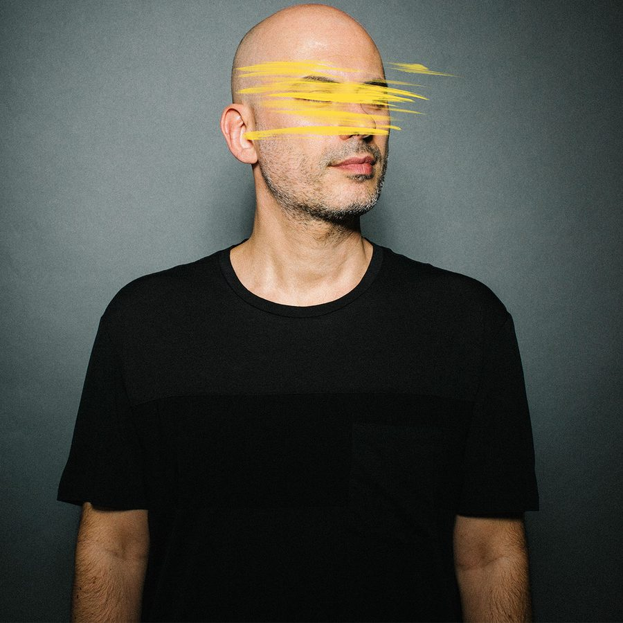

Riva Starr Throws a Curveball With “Disco Loco”


Italian-born and London-based Riva Starr has demonstrated by now he’s in it for the long haul, with more than a decade of productions behind him, including three artist albums. As it turns out, he’s got another album just around the corner in the form of Curveballs, which is due to drop at the end of October. The LP is showing up on the Truesoul house stable that techno heavyweight Adam Beyer runs alongside his Drumcode label. We’re bringing you a little taste as our Track of the Day.
Curveball will allegedly feature a mixture of current club sounds and old-school elements, “driven by Starr’s endeavor to produce music that stands the test of time.” At the end of this week, Truesoul is releasing a special four-track EP that previews a few of the album’s clubbier moments, and we’re previewing “Disco Loco,” which taps right into the legacy of the David Morales classic ‘90s “Needin’ U.”
“As I’m always evolving, every now and again, I need to make a point about my latest sound,” says Riva Starr. “Curveballs has been specially written to showcase the full range of my current sound and features a carefully selected collection of tracks designed for a club environment.”
Available September 21 via Truesoul.
Riva Starr’s Always EP is available here.
Follow Riva Starr on Facebook | Twitter | SoundCloud
Follow Truesoul on Facebook | Twitter | SoundCloud